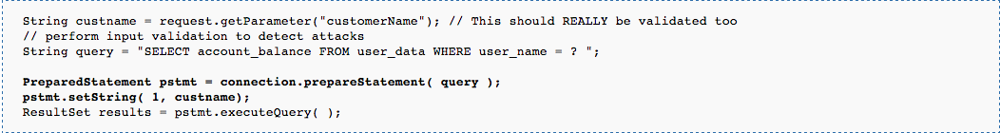

SQL, Use Injection Attack!
SQL is a programming language used to manage data in databases. Injection is when user input is sent to an interpreter as part of a command or a query, and the interpreter is tricked into executing that unintended command. So, SQL Injection is when user-supplied input (say, into a form online) is an "injected" SQL command that could compromise the security of a site or application by accessing or altering the data.
SQL injection flaws are actually pretty common because vulnerabilities are prevalent and the target, data in a databse, is usually pretty attractive to someone wanting critical information about or within your app. By taking advatage of injection flaws, attackers can create, read, update, or delete any arbitrary data available to the application. This could allow an attacker to completely compromise the application and any underlying systems, even if you have well-protected, firewalled environments. So what can you do to prevent this horrible deed from being done to your own app?
There are a number of things you could do to prevent injection attacks from happening. You could write a blacklist of things that aren't allowed to be inputted, you could escape all user input, you could specify stored procedures to be run on user input, etc. The only problem is that none of those work EVERY time (but 20% of the time, it works every time!).
The best way to prevent injection attacks is to write parameters, or parameterized queries, for you user's input. Here's an example from OWASP (the open web application security project):
This method of preventing SQL injection is preferred by most developers because all of the SQL code stays within the application, making the app relatively database independent.
So, in conlusion, there are ways to take advantage of SQL using SQL and injecting it via a command or query line meant to be used for user input. Luckily, there are also ways of preventing injection attacks, and the solution using parameters is often ragarded as the best practice. Give it a try, look into it further, and bst of luck to you in preventing SQL injection attacks.